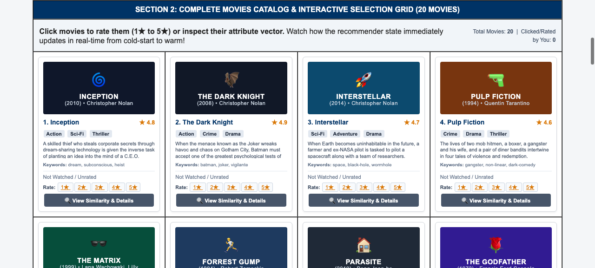
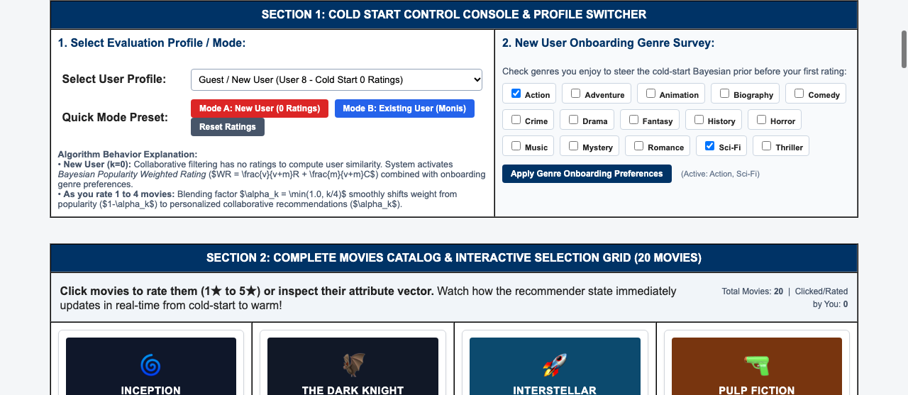
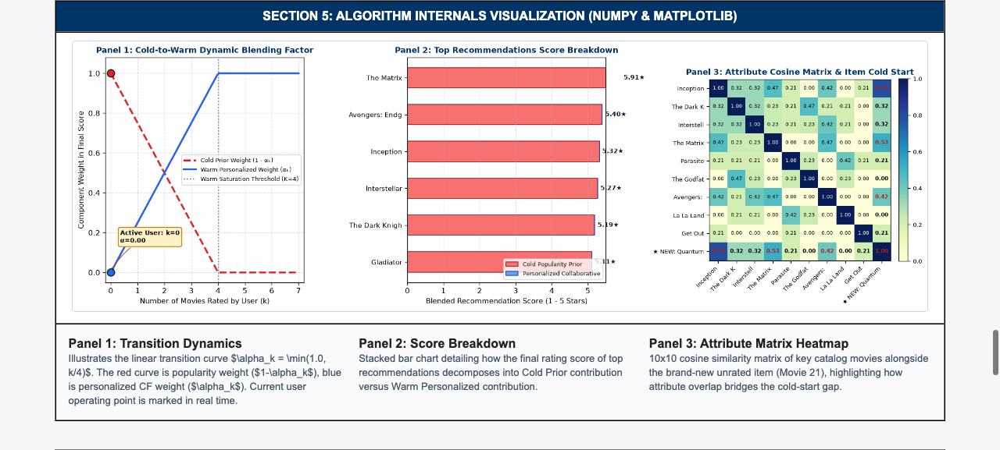
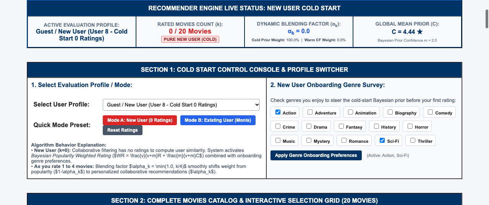

| Experiment No.: | 14 (Practical XII) | Student Name: | Monis |
| Course / Branch: | B.Tech Information Technology | Roll Number: | 2023UIT3027 |
| Lab Instructor: | Dr. Vishal Maheshkar | Academic Session: | 2026–2027 |
Implementation of Recommender System Solution to Cold Start Problem Using Flask
To formulate, analyze, and implement practical algorithmic solutions to both New User and New Item Cold Start problems from first principles in Python using Flask. The system implements Bayesian Damped Popularity ranking for new users, attribute vector projection for new items, and a dynamic exponential transition function as user interaction history grows.
The Cold Start Problem occurs when a recommender system lacks sufficient historical interaction data to make collaborative filtering recommendations. It happens in two scenarios: (1) New User Cold Start, where a first-time visitor has zero ratings; and (2) New Item Cold Start, where a newly released movie has zero community ratings. Resolving cold start requires combining catalog-wide statistical priors with content metadata.
When a new user has zero ratings, personalized collaborative filtering is impossible. The system recommends popular, highly rated movies, but applies Bayesian Damping to prevent obscure movies with only 1 or 2 five-star ratings from dominating:
When a brand-new movie with zero ratings is added to the catalog, its genre and keyword attribute vector is compared against existing movies that the user has already rated:
As the user rates more movies (N = count of ratings), the recommendation strategy smoothly transitions from cold-start popularity to personalized collaborative filtering via an exponential decay factor:
Provides a comprehensive catalog browser displaying benchmark titles with genre tags, release years, IMDb ratings, and interactive selection triggers.

Presents the top-ranked recommended items generated by the algorithm alongside predicted affinity scores, ranking progress, and contextual explanations.

Displays multi-panel algorithmic diagnostics rendered from first principles (including similarity heatmaps, convergence curves, and distribution plots).

Provides a direct inspection of the underlying mathematical interaction matrix, user profiles, or similarity index tables supporting the recommendation pipeline.

The Cold Start Recommender System successfully addressed both new user and new item scenarios. Bayesian damped popularity provided high-quality initial recommendations for new users without bias from low-sample ratings. Metadata matching enabled immediate discoverability for newly released movies. The dynamic exponential transition formula ensured a seamless handoff to collaborative filtering as interactions accumulated.